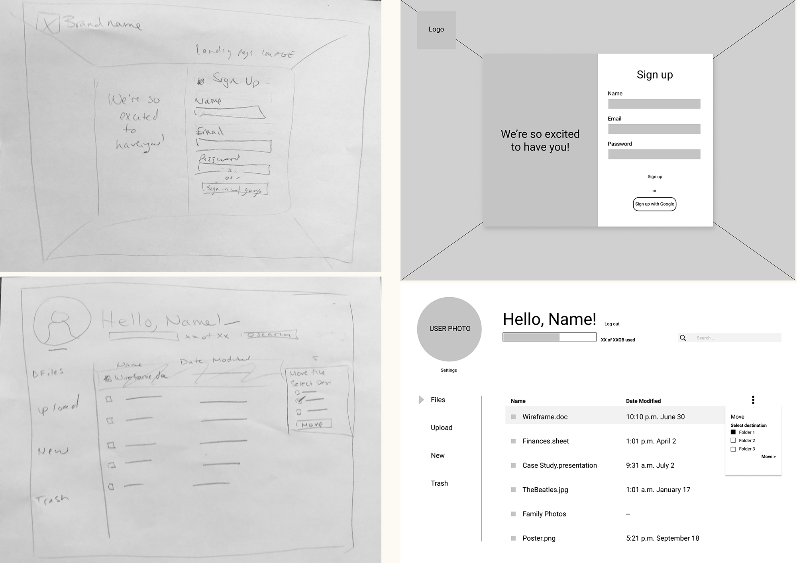
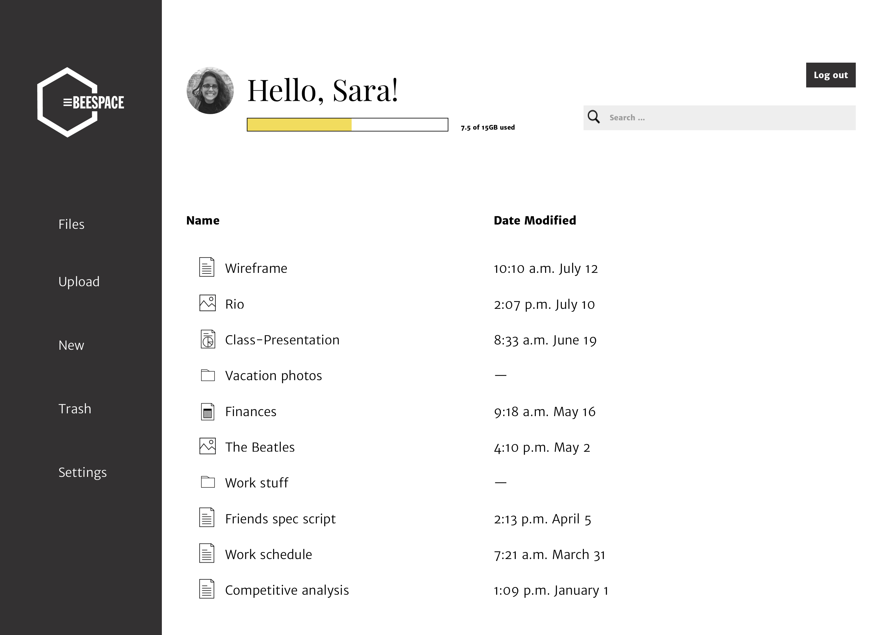

CASE STUDY
Connect. Create. Collaborate.
The cloud storage service market is a crowded one. But the demand for a functional and cheap cloud storage service is growing. Beespace is a place for people at various stages of busy-ness can connect, collaborate and create content. Beespace offers a broad range of plans as well, including a free plan with 15GB of storage.
DesktopMobile

Roles
UX Design
Visual Design
Branding and research
Deliverables
User Surveys
Competitive Analysis
Personas
User stories and flows
Branding style guide
Wireframes
Prototypes
User Testing
Mockups
Tools
Pen/paper
Adobe CC
Sketch
Figma
Invision
Usability Hub
Draw.io
PROBLEM
How can we stand out?
Some products offer content upload, sharing, and downloading while others offer content creation and collaboration. Combined with a poor device compatibility and not enough free storage, there is dissatisfaction with the products out there.
SOLUTION
Efficiency. More storage.
Beespace is focused on efficiency and cleanliness, and offers storage, content creation, and collaboration. Beespace is stripped down to the essentials so even the busiest of people can seamlessly use it.
USER SURVEY
What do our users want?
With the user survey, I wanted to get an idea of what people love, hate and want to improve about the cloud-based storage services they use. It was important for me to figure out why people used cloud-based storage. Was it for work? Was it personal? My other point of focus was to figure out what was the most and least important feature of the service.
Why do users use cloud storage services?
I wanted to know if users use their storage service for personal or business. 60.7% said they used it for both while 3.7% said they use it for only business.
What feature is most important to a user?
Forget the frills. Half of the responses to the survey said the most important feature in their cloud-based storage service was uploading their own files.
What feature is least important to a user?
The client brief talked about allowing users save files from the web. 64.3% of users who responded to the survey said this was the least important feature.
What's the competition like?
As my knowledge grew about what users were looking for, I took a deep dive into the competition. I focused my analysis on Google Drive, Dropbox and iCloud. As I researched each cloud storage service, I noticed that they each offer a unique opportunity for the users.
GOOGLE DRIVE

Strengths
- Brand is well known.
- Minimalist design, easy use of the website.
- Mobile version is consistent with the desktop version and responsive.
- 15GB of free data
- Reputation
- Documents, sheets, slides are all stored in the Drive and don’t count against the data.
Weaknesses
- Shares the data with your G-mail account.
- No password protection on file sharing.
- Completely web based.
- Slower syncs.
Opportunities
- Separate the data for your G-mail account and Drive account to free up space.
- Allow password protections for files.
- Allow easier access between the web based options and their Microsoft counterpart apps.
Threats
- Other cloud storage sites are popping up.
DROPBOX

Strengths
- Most well known cloud storage option.
- Available for every platform.
- Shared folders
- Business plan with unlimited storage.
- Allows users to earn data.
- Tight integration between desktop and mobile app.
Weaknesses
- Only stores files
- Doesn’t sync data
- 2GB free
- Nothing in between the free and next tiered pricing plan at 9.99/mo.
Opportunities
- Provide more data for the free tier. Or at least provide an alternate between the 2GB and the 1TB option.
- Allow data to sync.
- Provide a broader system to compete with Google Drive or iCloud.
Threats
- Other cloud storage sites are popping up, crowding the marketplace.
- Services providing more than just file storage.
ICLOUD

Strengths
- Part of iOS X finder
- Can install it on Windows
- Can access files on icloud.com
- Cheap tiered pricing
- Offers e-mail as well as data sync.
- Device backups.
- Deep integration with iOS across multiple products.
Weaknesses
- iCloud compatible apps and services such as your photo library and e-mail count against your iCloud space.
- Does not support shared folders.
- Incompatible with Android devices.
- Only 1GB free space.
Opportunities
- Launch an Android version of the app.
- Allow more flexibility with the way files are shared.
- Offer business plans to compete with Dropbox and Google Drive.
- Give more incentive for signing up, such as more free space.
Threats
- The cloud storage marketplace is growing.
- Cloud storage apps that are more compatible across all systems.
User Personas
Based on the information in my user survey as well as my research in the competitive analysis, I was able to create two user personas: the casual user and the professional. Both these user personas tap the markets I think Beespace needs to tap, those who just want to connect with their family and friends and those who want to create and collaborate.
View user personas

Jessica S.
Goals
- To be able to keep on organized drive of both personal and business related files.
- To collaborate with coworkers and friends.
- A great product without sacrificing the overall design and look.
Frustrations
- Lack of free storage options.
- Inability to edit directly in the cloud.
- Inefficient organization

Ryan P.
Goals
-
To share content with family members.
- To be able to access content anywhere on any device.
- Easy upload and search
Frustrations
- Cost
- Hard to navigate
- No night mode.
User flows
My next step was to create a series of user flows to visualize how users would complete each task. These users flows were for the high priority tasks such as onboarding, account upgrade and file upload. I used my research with the competitive analysis to determine what worked and what didn’t in the user flows.
View user flows
Wireframes
The wireframes are probably what changed the most throughout the project. The first few iterations of the dashboard were rough and I refined them as I continued on. Once I had a refined version, I moved onto the other pages as I knew based on the user survey that I was going to try to keep this as simplistic as possible.
View wireframes

Branding
When it came to defining what the cloud storage service would be, I thought back to the user survey and the user personas I created. I wanted the brand to be something people could trust and rely on. I wanted it to be a place where people went to stay organized and to stay connected. With the help of mindmapping, I played around the word combinations and landed on the word “busy.” I instantly thought of “bee” and went from there. It wasn’t long before Beespace was born. The refined Beespace logo is a honeycomb, with part of it cut out to make way for the hamburger style list and brand name.
View branding

Color scheme
#333232
#F1DC53
#E6EDD3

High Fidelity mockups
I created high fidelity prototypes of my design for both desktop and mobile that aligned with the brand styles I created. I made some adjustments to the style guide as I went along based on what worked and what didn’t during the usability testing.
View mockups


Prototype and usability testing
I put both mobile and desktop prototypes through a usability test. Both were extremely helpful in making the finishing touches to the products. The biggest area of confusion on mobile was that there weren’t enough back buttons and users had trouble navigating back to a screen. There was also some clarification that was needed on the sharing and adding a collaborator. For the most part, the adjustments I made from the first usability test were a success in the second round of testing. The feedback from the second round were small. I had screens disappear for sharing and adding a collaborating and users felt they were too fast or not necessary, so I nixed them in favor of users closing out of those dialog boxes themselves. I was able to use this feedback to fine tune my product.
View desktopView mobile
A/B testing
My original mockups were very clean. Not a lot of color and a lot of white space. But after the first usability test I thought maybe the design would better served with a rail that anchored the design better. Once I added the rail, I started to make a few adjustments on other pages to see if those would work well, too. I used three designs for preference tests to see if my original designs were more or less impactful. The victor in each of the tests are on the first of the two designs.
A/B testing
My original mockups were very clean. Not a lot of color and a lot of white space. But after the first usability test I thought maybe the design would better served with a rail that anchored the design better. Once I added the rail, I started to make a few adjustments on other pages to see if those would work well, too. I used three designs for preference tests to see if my original designs were more or less impactful. The victor in each of the tests are below on the left.
Dashboard
86% of responses said they preferred the dashboard with the black rail. 14% said they preferred the clean look. I asked them why they chose that design: The majority of responses said they felt the rail anchored the page and provided necessary contrast.


Document tool bar shade
71% said they preferred the yellow shade. 29% said they preferred the green shade. When asked why they chose that design, most responses felt that the green did not pop as much as the yellow. They felt the contrast helped them move their eye down the page.


Button
When I created the style guide, I included rounded buttons but did not include them in my mockup because I used mostly squares as shapes throughout. But rounded buttons are popular, so I asked users. 55% said they liked the square button and 45% said they liked the rounded. The results were not significant. I kept them square to maintain consistency.


Conclusion + what I learned
Beespace accomplishes its goal to give users a quick and clean experience in uploading, creating and sharing. Through many usability tests and design iterations, we developed a user interface that is simple to use, easy to navigate and provides a trustworthy experience. Without user testing, Beespace wouldn’t be what it is. The feedback provided during both tests proved crucial to making Beespace a success.
Designing Beespace was probably the most challenging thing I’ve designed. I have experience in visual design, but when it came to user research and branding, that’s not something I am familiar with. It’s natural for me to get lost in something I designed based on my own personal preferences. Designing Beespace forced me out of that box and it forced me to seek out users for input and thoughts. The user survey, user testing and preference testing were invaluable to this project. By the end of the project I felt more comfortable reaching out to others for opinions and it made me a much better designer.